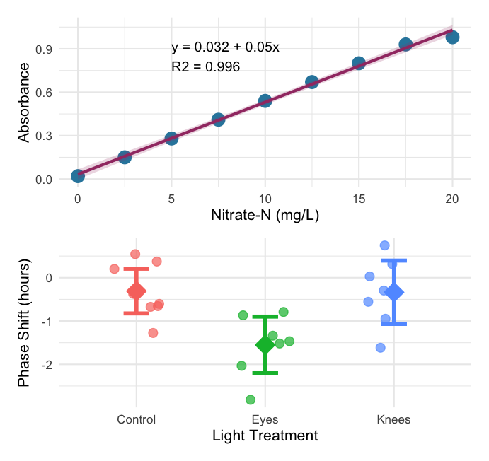

Lecture: Analysis of Variance (ANOVA)
Single-factor ANOVA
Where We Left Off
Covered last time — Multiple Regression:
- The MLR model, regression parameters
- Analysis of variance for regression
- Null hypotheses, explained variance
- Assumptions and diagnostics
- Collinearity, interactions, dummy variables
- Model selection, importance of predictors
Note
✅ Key idea from last lecture
You already built an ANOVA table for a regression — you just called it “analysis of variance for regression.” Today we apply the exact same machinery to categorical predictors.

ANOVA Goals
ANOVA aims to compare means of groups:
- Attributes contribution of predictors + “error” to variability
- Tests H₀ that population (random effects) or group (fixed effects) means are equal
- Single factor (1-way) and multifactor (2-, 3-way designs)
- Single factor: one factor with more than two levels
- Multifactor: two or three factors with two or more levels each — examines variation due to factors AND their interaction

Analysis of Variance
Analysis of variance is the most powerful approach known for simultaneously testing if the means of k groups are equal — it works by assessing whether individuals chosen from different groups are, on average, more different than individuals chosen from the same group.
The null hypothesis of ANOVA is that the population means μᵢ are the same for all treatments.
- H₀: μ₁ = μ₂ = … = μₖ
- H₁: at least one μᵢ is different from the others
Rejecting H₀ in ANOVA is evidence that the mean of at least one group is different from the others — it does not indicate which means differ.

Partitioning the Sum of Squares
The total variation in Y can be expressed as a sum of squares:
\[SS_{total} = \sum_{i=1}^{a}\sum_{j=1}^{n}(Y_{ij} - \bar{Y})^2\]
This can be partitioned into two components:
- Among Groups (Treatment): \(SS_{among} = n\sum_{i=1}^{a}(\bar{Y}_i - \bar{Y})^2\)
- Within Groups (Error): \(SS_{within} = \sum_{i=1}^{a}\sum_{j=1}^{n}(Y_{ij} - \bar{Y}_i)^2\)
These components are additive: \(SS_{total} = SS_{among} + SS_{within}\)

The F-Ratio
\[F = \frac{MS_{among}}{MS_{error}}\]
- Under H₀ (all means equal): the F-ratio should be approximately 1
- Larger F-ratios suggest among-group variance exceeds what’s expected by chance
- With the circadian rhythm data: F = 7.29, p = 0.004 — we reject H₀
- The F-ratio follows an F-distribution with (a − 1) and a(n − 1) df
# A tibble: 2 × 2
Metric Value
<chr> <dbl>
1 F-observed 7.29
2 F-critical (alpha = 0.05) 3.52
Variance Explained: R²
R² summarizes the contribution of group differences to total variation:
\[R^2 = \frac{SS_{among}}{SS_{total}}\]
This is interpreted as the “fraction of the variation in Y that is explained by groups.” For the circadian rhythm data:
\[R^2 = \frac{7.224}{16.639} = 0.43\]
43% of the total variation in phase shift is explained by differences in light treatment, with the remaining 57% unexplained.
Connection to regression: this is exactly the same calculation as R² in regression, \(R^2 = SS_{regression}/SS_{total}\).

A Newer Way to Check — the performance Package

Note
✅ Key idea
check_model() from the performance package builds all the standard diagnostic panels — plus a few extra (e.g., collinearity) — in one call, with built-in guidance on what “good” looks like for each panel.
Demonstrating Assumption Violations
Creating a modified dataset with clear violations:
set.seed(42)
violated_circ_df <- circ_data %>%
mutate(
phase_shift_violated = case_when(
treatment == "Control" ~ phase_shift,
treatment == "Knees" ~ phase_shift * 3.25,
treatment == "Eyes" ~ {
n <- length(phase_shift)
c(phase_shift[1:(n-2)], phase_shift[(n-1):n] - 7)
}
)
)
violated_model <- lm(phase_shift_violated ~ treatment,
data = violated_circ_df)What we changed: increased variance in the Knees group, added extreme outliers to the Eyes group, creating unequal variances and non-normality.

Performing the Kruskal-Wallis Test — Original Data
Even though assumptions are met, let’s compare results:
Kruskal-Wallis rank sum test
data: phase_shift by treatment
Kruskal-Wallis chi-squared = 9.4231, df = 2, p-value = 0.008991Interpretation: H = test statistic (χ² approximation); df = k − 1 = 2; p = 0.0135 (significant at α = 0.05); conclusion: at least one group differs.
Compare to parametric ANOVA:
Analysis of Variance Table
Response: phase_shift
Df Sum Sq Mean Sq F value Pr(>F)
treatment 2 7.2245 3.6122 7.2894 0.004472 **
Residuals 19 9.4153 0.4955
---
Signif. codes: 0 '***' 0.001 '**' 0.01 '*' 0.05 '.' 0.1 ' ' 1How Kruskal-Wallis works:

# A tibble: 3 × 4
treatment mean_rank sum_rank n
<fct> <dbl> <dbl> <int>
1 Control 14.6 117 8
2 Eyes 5.29 37 7
3 Knees 14.1 99 7Kruskal-Wallis on Violated Data
Non-parametric test handles violations:
Kruskal-Wallis rank sum test
data: phase_shift_violated by treatment
Kruskal-Wallis chi-squared = 6.8453, df = 2, p-value = 0.03263Analysis of Variance Table
Response: phase_shift_violated
Df Sum Sq Mean Sq F value Pr(>F)
treatment 2 41.806 20.9029 2.8361 0.0836 .
Residuals 19 140.037 7.3704
---
Signif. codes: 0 '***' 0.001 '**' 0.01 '*' 0.05 '.' 0.1 ' ' 1Key observations: both tests still detect differences; Kruskal-Wallis is more robust to violations; the parametric test may give misleading results when assumptions are violated; the non-parametric test maintains validity.

Why Kruskal-Wallis is robust: uses ranks instead of raw values, outliers affect ranks minimally, unequal variances are less problematic, no distribution assumptions are needed.